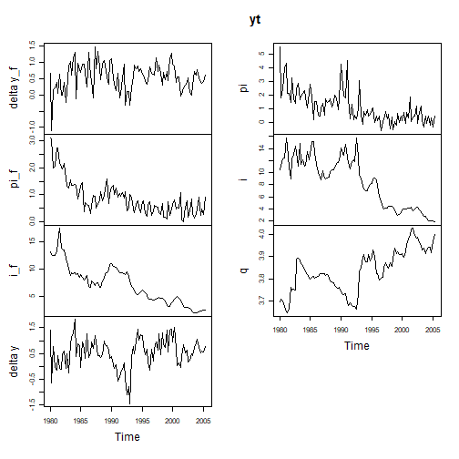
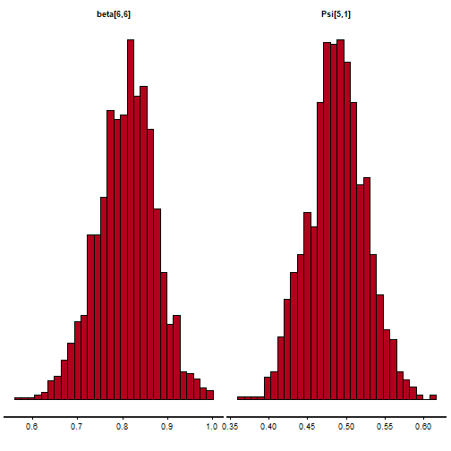
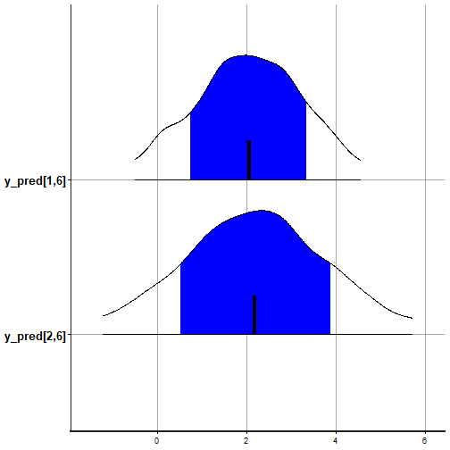
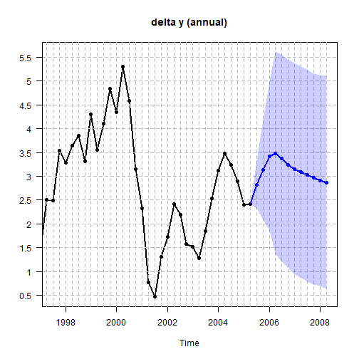
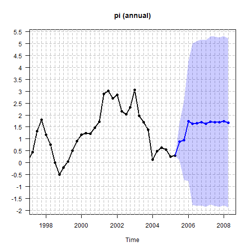
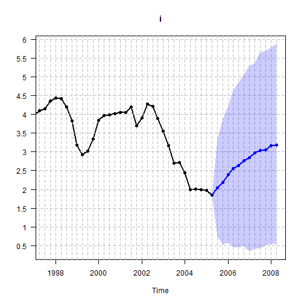
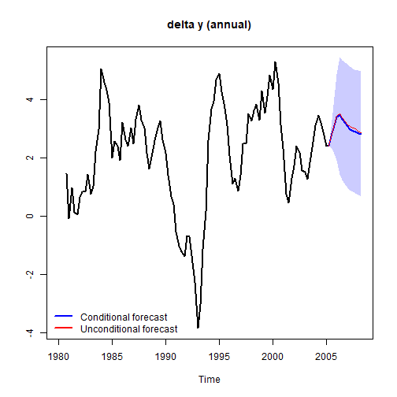
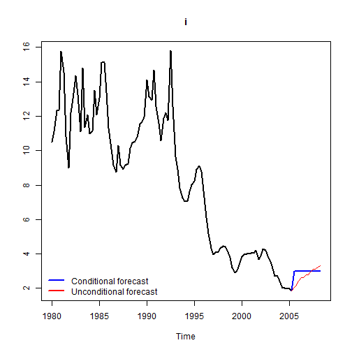
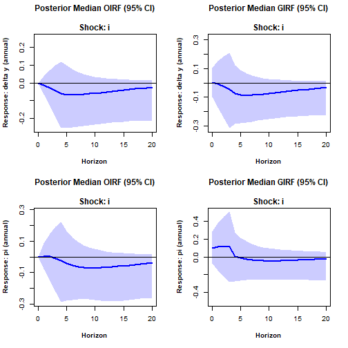

SteadyStateBVAR: theoretical overview and getting started
Source:vignettes/Homoscedastic-steady-state-BVAR.Rmd
Homoscedastic-steady-state-BVAR.RmdWith this package, the user can estimate the steady-state BVAR(p) model of Mattias Villani (Villani, 2009). The goal is to use modern Bayesian tools (Stan) to: i) estimate the model as specified in the original paper, and ii) extend the model in many different ways. Back in the day, extensions of the model seemed to be limited by what Mattias Villani had time to derive.
See for example, Clark (2011): “In a methodological sense, this paper extends the estimator of Villani (2009) to include stochastic volatility.” Later on, he writes: “(Special thanks are due to Mattias Villani for providing the formulas for posterior means and variances of and , which generalize the constant-variance formulas of Villani 2009.)”
For a more recent example of the model being at the mercy of Professor Villani, we can take a look at the Technical Guide for the BEAR (Bayesian Estimation, Analysis and Regression) toolbox by the ECB. On page 122, Dieppe, Legrand, and van Roye (2018) write: “Villani (2009) only provides derivation in the case of the normal-diffuse prior distribution, so the incoming analysis will be restricted to this case.”
Times are different now, and with the help of Stan, we can basically do whatever we can imagine. To showcase this, in the last section we build on the steady-state BVAR model of Clark (2011) [which itself is an extension of the original model (Villani, 2009)], by letting the log volatilities follow correlated AR(1) processes instead of uncorrelated driftless random walks. And this is done without asking Professor Villani for any derivations. I simply wrote down the model equations, put some priors on the parameters, and Stan did the rest!
Introduction
The steady-state BVAR() model (Villani, 2009) is
where is a -dimensional vector of endogenous variables (time series) at time , is a -dimensional vector of deterministic (exogenous) variables at time , and the (reduced-form) innovations are with independence between time periods. Here for is a matrix, and is a matrix. Now
is the unconditional mean, or the steady state, of the process. Since long-horizon forecasts from stationary VARs converge to the unconditional mean (steady state), it is naturally very important from a forecasting perspective to obtain precise inference on .
Note that the current version of this package only allows for to contain either a constant, a constant and a dummy variable, or a constant and a time trend. We can stack the (transposed) matrices in the matrix
We can then rewrite the model as a nonlinear regression (Karlsson, 2013)
where is a -dimensional vector of lagged endogenous variables and is a -dimensional vector of lagged deterministic (exogenous) variables, is the identity matrix and denotes the Kronecker product. This is how the likelihood is written in the Stan code. The goal is to estimate , and , so priors are needed. First, prior independence between and is assumed. Starting with , we use the Minnesota prior
The prior means (the elements of ) are set to
Here, the autoregressive coefficient is element of for . As such, the Minnesota prior sets all prior means for the elements in to , except for the elements that relate to the first own lags of the variables, which are set to . If variable is in level (e.g. nominal interest rate), then , and typical choices for are or . Evaluating the equations at their prior means, equation becomes a random walk if and a persistent stationary AR(1) process if . Since the steady state only exists if the process is stationary, is recommended for the steady-state BVAR. If variable is in difference (e.g. output growth), then , and the most common choice for is , i.e. equation becomes (when evaluating it at its prior means) a random walk expressed in first differences. If a differenced variable still shows some degree of persistence (can be examined with an ACF plot), a suitable value for can be (for example) instead of . Moving on to the prior variances, is a diagonal matrix containing the prior variances for the elements in . They are specified as
Here , , and are scalar hyperparameters known as the overall tightness, the cross-equation tightness and the lag decay rate. Furthermore, is the :th element of , which we do not know and therefore replace with an estimate. In this package, it is replaced by the least squares residual variance from a univariate autoregression for variable with lags (including the constant and dummy/trend variable if applicable). Moving on to , the prior we use is
This is really the core of the steady-state BVAR model. In , we specify our prior beliefs about the location of the steady state, and in , which we assume to be a diagonal matrix, we specify our degree of certainty in those prior beliefs. Finally, the prior for is the usual noninformative Jeffreys prior
However, if the user wants, an inverse Wishart prior can be used instead
where is the scale matrix and is the number of degrees of freedom. An uninformative prior can be (and is in this package) specified by setting where is the least squares estimate from the VAR() (including the constant and dummy/trend variable if applicable), and .
This package also allows for stochastic volatility, where we let the covariance matrix of the innovations vary over time such that we have a time-varying covariance matrix (See other vignettes).
Homoscedastic steady-state BVAR (Villani, 2009)
Here we estimate the original (homoscedastic) steady-state BVAR model from Section 4.1 of Villani (2009).
First, let us attach the package and load the data.
library(SteadyStateBVAR)
data("Villani2009")
yt <- Villani2009The data set contains quarterly data for Sweden over the time period 1980Q1–2005Q4. The seven variables are: trade-weighted measures of foreign GDP growth , CPI inflation and the 3-month interest rate , the corresponding domestic variables (, and ), and the level of the real exchange rate defined as , where and are the foreign and domestic CPI levels (in logs) and is the (log of the) trade-weighted nominal exchange rate. As such, we have
Also, we will leave out the last two observations, so the user can compare the forecasts produced here to the last forecasts seen in Figures 1-3 in Villani (2009) to verify that this implementation works correctly.

Also, let us create the bvar object which we will use throughout here.
bvar_obj <- bvar(data = yt)To model the Swedish financial crisis at the beginning of the 90s and the subsequent shift in monetary policy to inflation targeting and flexible exchange rate, (deterministic variables at time ) includes a constant term and a dummy for the pre-crisis period, i.e.
To formulate a prior on , note that the specification of implies the following parametrization of the steady state:
where denotes the :th column of . We are now ready to set up the model. Although it is not mentioned which lag length is used in Villani (2009), we assume .
bvar_obj <- setup(bvar_obj,
p=1,
deterministic = "constant_and_dummy",
dummy = dum_var)Now let us specify the priors. We first consider . We choose the same values for the hyperparameters as in Villani (2009), i.e. an overall tightness of , a cross-equation tightness of , and a lag decay rate of . We then specify the prior means for the first own lags of the variables. For variables in growth rates, we set the prior mean to , for variables in levels, we set the prior mean to .
lambda_1 <- 0.2
lambda_2 <- 0.5
lambda_3 <- 1.0
#fol_pm = first own lag prior means
fol_pm=c(0, #delta y_f
0, #pi_f
0.9, #i_f
0, #delta y
0, #pi
0.9, #i
0.9 #q
)Now moving on to for the steady-state priors, we set them according to the 95% prior probability intervals (normal distribution) in Table I in Villani (2009). We first note that for our data here, the growth rate variables () are specified in terms of quarterly rates of change/quarter-on-quarter growth, i.e. for a variable which is on a quarterly frequency, the quarterly growth rate is . The 95% prior probability intervals in Table I are specified in terms of annualized quarterly growth rates .
The ppi() function is useful here. Simply input the
desired 95% prior probability interval (normal distribution) on the
annualized scale with annualized_growthrate=TRUE, and the
function returns the corresponding prior mean and variance on the
original scale (quarter-on-quarter growth). Of course, we could also
just annualize our data beforehand, and set
annualized_growthrate=FALSE. So now we do this for all
steady-state coefficients. Again, see Table I in Villani (2009) for the
95% prior probability intervals. The default argument for
ppi() is ‘interval=0.95’, but if we wanted for example 68%
prior probability intervals we could just set
interval=0.68.
#psi_1 = Psi col 1
#psi_2 = Psi col 2
theta_Psi <-
c(
ppi( 2.00, 3.00, annualized_growthrate=TRUE)$mean, #psi_1: delta y_f
ppi( 1.50, 2.50, annualized_growthrate=TRUE)$mean, #psi_1: pi_f
ppi( 4.50, 5.50, annualized_growthrate=FALSE)$mean, #psi_1: i_f
ppi( 2.00, 2.50, annualized_growthrate=TRUE)$mean, #psi_1: delta y
ppi( 1.70, 2.30, annualized_growthrate=TRUE)$mean, #psi_1: pi
ppi( 4.00, 4.50, annualized_growthrate=FALSE)$mean, #psi_1: i
ppi( 3.85, 4.00, annualized_growthrate=FALSE)$mean, #psi_1: q
ppi(-1.00, 1.00, annualized_growthrate=TRUE)$mean, #psi_2: delta y_f
ppi( 1.50, 2.50, annualized_growthrate=TRUE)$mean, #psi_2: pi_f
ppi( 1.50, 2.50, annualized_growthrate=FALSE)$mean, #psi_2: i_f
ppi(-1.00, 1.00, annualized_growthrate=TRUE)$mean, #psi_2: delta y
ppi( 4.30, 5.70, annualized_growthrate=TRUE)$mean, #psi_2: pi
ppi( 3.00, 5.50, annualized_growthrate=FALSE)$mean, #psi_2: i
ppi(-0.50, 0.50, annualized_growthrate=FALSE)$mean #psi_2: q
)
Omega_Psi <-
diag(
c(
ppi( 2.00, 3.00, annualized_growthrate=TRUE)$var, #psi_1: delta y_f
ppi( 1.50, 2.50, annualized_growthrate=TRUE)$var, #psi_1: pi_f
ppi( 4.50, 5.50, annualized_growthrate=FALSE)$var, #psi_1: i_f
ppi( 2.00, 2.50, annualized_growthrate=TRUE)$var, #psi_1: delta y
ppi( 1.70, 2.30, annualized_growthrate=TRUE)$var, #psi_1: pi
ppi( 4.00, 4.50, annualized_growthrate=FALSE)$var, #psi_1: i
ppi( 3.85, 4.00, annualized_growthrate=FALSE)$var, #psi_1: q
ppi(-1.00, 1.00, annualized_growthrate=TRUE)$var, #psi_2: delta y_f
ppi( 1.50, 2.50, annualized_growthrate=TRUE)$var, #psi_2: pi_f
ppi( 1.50, 2.50, annualized_growthrate=FALSE)$var, #psi_2: i_f
ppi(-1.00, 1.00, annualized_growthrate=TRUE)$var, #psi_2: delta y
ppi( 4.30, 5.70, annualized_growthrate=TRUE)$var, #psi_2: pi
ppi( 3.00, 5.50, annualized_growthrate=FALSE)$var, #psi_2: i
ppi(-0.50, 0.50, annualized_growthrate=FALSE)$var #psi_2: q
)
)Finally for
we will use the noninformative Jeffreys prior
,
as done in Villani (2009). We simply pass everything to the
priors() function. Note here that the function
automatically creates
and
.
bvar_obj <- priors(bvar_obj,
lambda_1,
lambda_2,
lambda_3,
fol_pm,
theta_Psi,
Omega_Psi,
Jeffrey=TRUE)As in Villani (2009), we incorporate the assumption that Sweden is a small economy and therefore unlikely to affect the foreign economy by restricting the upper-right submatrix of for or equivalently restricting the bottom-left submatrix of to the zero matrix. This technique is called “block exogeneity” (Dieppe, Legrand, and van Roye, 2018). In essence we treat the foreign economy as exogenous to the domestic economy, although it is not exogenous in the strict sense (Karlsson, 2013).
p <- bvar_obj$setup$p
k <- bvar_obj$setup$k
kf <- 3 #first 3 variables are foreign in yt
restriction_matrix <- matrix(1, k*p, k)
for(i in 1:p){
rows <- ((i-1)*k + kf + 1) : (i*k)
cols <- 1:kf
restriction_matrix[rows, cols] <- 0
}
restriction_matrix
#> [,1] [,2] [,3] [,4] [,5] [,6] [,7]
#> [1,] 1 1 1 1 1 1 1
#> [2,] 1 1 1 1 1 1 1
#> [3,] 1 1 1 1 1 1 1
#> [4,] 0 0 0 1 1 1 1
#> [5,] 0 0 0 1 1 1 1
#> [6,] 0 0 0 1 1 1 1
#> [7,] 0 0 0 1 1 1 1We can look at the restriction matrix for
to see which elements we restrict to zero. Since the prior means for
these elements are zero, we do the restriction by setting the relevant
prior variances in
to be very small. We simply pass our
restriction matrix to the restrict_beta() function:
bvar_obj <- restrict_beta(bvar_obj, restriction_matrix)Now, we need to supply our forecast horizon , and also a matrix containing the deterministic variables () for the future periods
Since the deterministic variables are i) a constant and ii) a dummy indicating whether , we simply set
bvar_obj$predict$H <- 12
(bvar_obj$predict$d_pred <- cbind(rep(1, 12), 0))
#> [,1] [,2]
#> [1,] 1 0
#> [2,] 1 0
#> [3,] 1 0
#> [4,] 1 0
#> [5,] 1 0
#> [6,] 1 0
#> [7,] 1 0
#> [8,] 1 0
#> [9,] 1 0
#> [10,] 1 0
#> [11,] 1 0
#> [12,] 1 0Now we can fit the model.
bvar_obj <- fit(bvar_obj,
iter = 2000,
warmup = 500,
chains = 1)
#>
#> SAMPLING FOR MODEL 'anon_model' NOW (CHAIN 1).
#> Chain 1:
#> Chain 1: Gradient evaluation took 0.001043 seconds
#> Chain 1: 1000 transitions using 10 leapfrog steps per transition would take 10.43 seconds.
#> Chain 1: Adjust your expectations accordingly!
#> Chain 1:
#> Chain 1:
#> Chain 1: Iteration: 1 / 2000 [ 0%] (Warmup)
#> Chain 1: Iteration: 200 / 2000 [ 10%] (Warmup)
#> Chain 1: Iteration: 400 / 2000 [ 20%] (Warmup)
#> Chain 1: Iteration: 501 / 2000 [ 25%] (Sampling)
#> Chain 1: Iteration: 700 / 2000 [ 35%] (Sampling)
#> Chain 1: Iteration: 900 / 2000 [ 45%] (Sampling)
#> Chain 1: Iteration: 1100 / 2000 [ 55%] (Sampling)
#> Chain 1: Iteration: 1300 / 2000 [ 65%] (Sampling)
#> Chain 1: Iteration: 1500 / 2000 [ 75%] (Sampling)
#> Chain 1: Iteration: 1700 / 2000 [ 85%] (Sampling)
#> Chain 1: Iteration: 1900 / 2000 [ 95%] (Sampling)
#> Chain 1: Iteration: 2000 / 2000 [100%] (Sampling)
#> Chain 1:
#> Chain 1: Elapsed Time: 131.483 seconds (Warm-up)
#> Chain 1: 92.804 seconds (Sampling)
#> Chain 1: 224.287 seconds (Total)
#> Chain 1:Let us look at the posterior mean of , , and .
summary(bvar_obj)
#> beta posterior mean
#> [,1] [,2] [,3] [,4] [,5] [,6] [,7]
#> [1,] 0.17 0.04 0.01 0.12 0.02 -0.10 0.00
#> [2,] -0.11 0.44 0.16 0.13 0.00 -0.02 0.00
#> [3,] -0.03 0.05 0.93 -0.04 0.12 0.15 0.00
#> [4,] 0.00 0.00 0.00 0.20 -0.10 -0.09 0.00
#> [5,] 0.00 0.00 0.00 -0.02 0.01 0.04 0.00
#> [6,] 0.00 0.00 0.00 0.00 0.02 0.81 0.00
#> [7,] 0.00 0.00 0.00 1.76 3.45 0.90 0.91
#>
#> Psi posterior mean
#> [,1] [,2]
#> [1,] 0.57 0.07
#> [2,] 0.51 0.48
#> [3,] 4.94 2.02
#> [4,] 0.58 -0.04
#> [5,] 0.49 1.13
#> [6,] 4.29 4.45
#> [7,] 3.92 -0.11
#>
#> Sigma posterior mean
#> [,1] [,2] [,3] [,4] [,5] [,6] [,7]
#> [1,] 0.17 -0.03 0.02 0.10 -0.01 0.01 0.00
#> [2,] -0.03 0.12 0.04 -0.01 0.15 0.04 0.00
#> [3,] 0.02 0.04 0.51 0.02 0.17 0.10 0.00
#> [4,] 0.10 -0.01 0.02 0.24 -0.06 0.01 0.00
#> [5,] -0.01 0.15 0.17 -0.06 0.68 0.13 -0.01
#> [6,] 0.01 0.04 0.10 0.01 0.13 1.61 -0.01
#> [7,] 0.00 0.00 0.00 0.00 -0.01 -0.01 0.00We can access the posterior means with
bvar_obj$posterior_means if needed.
Note that bvar_obj$fit$stan is an object of class
stanfit. So we can do the usual rstan
inference on our fitted model. Let’s look at some examples for i) the
first own lag of the domestic interest rate (for which we set the prior
mean to 0.9) and ii) the post-crisis steady-state coefficient of
inflation (multiply the steady-state coefficient by 4 to obtain the
annualized rate).
stanfit <- bvar_obj$fit$stan
rstan::plot(stanfit,
pars=c("beta[6,6]", "Psi[5,1]"),
plotfun="hist")
#> `stat_bin()` using `bins = 30`. Pick better value `binwidth`.
We can also look at the model forecasts directly with
rstan. Remember that we left out the last two
observations/quarters, so let us look at our forecasts of the domestic
interest rate and compare them with the actual values.
(Villani2009[103:104,6]) #true values
#> [1] 1.478503 1.563795
rstan::plot(stanfit,
pars=c("y_pred[1,6]", "y_pred[2,6]"),
show_density = TRUE,
ci_level = 0.68,
fill_color = "blue")
#> ci_level: 0.68 (68% intervals)
#> outer_level: 0.95 (95% intervals)
So the model overshot a bit, but the true values are within the 68% prediction interval. Now let us plot the forecasts along with the historical data. We will choose a 68% prediction interval and the mean of the predictive distribution as the point forecast. For variables in quarter-on-quarter growth rates, we transform the historical data and predictions to yearly growth rates with ‘growth_rate_idx’ where we specify the index of the growth rate variables in . Note that this is not annualization, but we are now computing , i.e. the annual growth rate, by summing up to fourth differences.
fcst <- forecast(bvar_obj,
ci = 0.68,
fcst_type = "mean",
growth_rate_idx = c(4,5),
plot_idx = c(4,5,6))


We can also perform conditional forecasting. We will follow the implementation used in the BEAR toolbox (see Algorithm 3.3.1 in Dieppe, Legrand, and van Roye [2018]). Note that for the structural shocks, identification is based on the Cholesky factorisation.
Now suppose we are interested in the forecasts of the domestic GDP growth conditional on a scenario where the three-month domestic interest rate rises quickly and unexpectedly to 3%, and then stays there.
First we set up our conditions/scenarios, i.e., which variables, which horizons, and which values the variables will take during those horizons. Our conditions are that will follow our specified path at forecast horizons .
conditions <- data.frame(
var = rep(6,12),
horizon = rep(1:12),
value = rep(3,12)
)We then do the conditional forecasting. We again select a 68% CI and the median of the predictive distribution as the point forecast.
cond_fcst <- conditional_forecast(bvar_obj,
conditions,
ci=0.68,
fcst_type = "median",
plot_idx = c(4,6),
growth_rate_idx = c(4))

Now for some impulse response analysis. We can choose between the orthogonalized impulse response function (OIRF) and the generalized impulse response function (GIRF). Similar to forecasting, we can choose either the mean or the median (the default is the median), and we can also transform the IRFs for the quarter-on-quarter growth rate variables to the annual/yearly scale.
par(mfrow=c(2,2))
irf <- IRF(bvar_obj,H=20,response=4,shock=6,type="median",method="OIRF",ci=0.95,growth_rate_idx=4)
irf <- IRF(bvar_obj,H=20,response=4,shock=6,type="median",method="GIRF",ci=0.95,growth_rate_idx=4)
irf <- IRF(bvar_obj,H=20,response=5,shock=6,type="median",method="OIRF",ci=0.95,growth_rate_idx=5)
irf <- IRF(bvar_obj,H=20,response=5,shock=6,type="median",method="GIRF",ci=0.95,growth_rate_idx=5)
References
Clark, T. E. (2011). Real-Time Density Forecasts from Bayesian Vector Autoregressions with Stochastic Volatility. Journal of Business & Economic Statistics. 29(3), pp. 327–341.
Dieppe, A., Legrand, R., and van Roye, B. (2018). The Bayesian Estimation, Analysis and Regression (BEAR) Toolbox Technical guide. European Central Bank.
Karlsson, S. (2013). Forecasting with Bayesian Vector Autoregression. In: Elliott, G. and Timmerman, A. (eds) Handbook of Economic Forecasting. Elsevier B.V. Vol 2, Part B., pp. 791-897.
Villani, M. (2009). Steady-state priors for vector autoregressions. Journal of Applied Econometrics. 24(4), pp. 630-650.